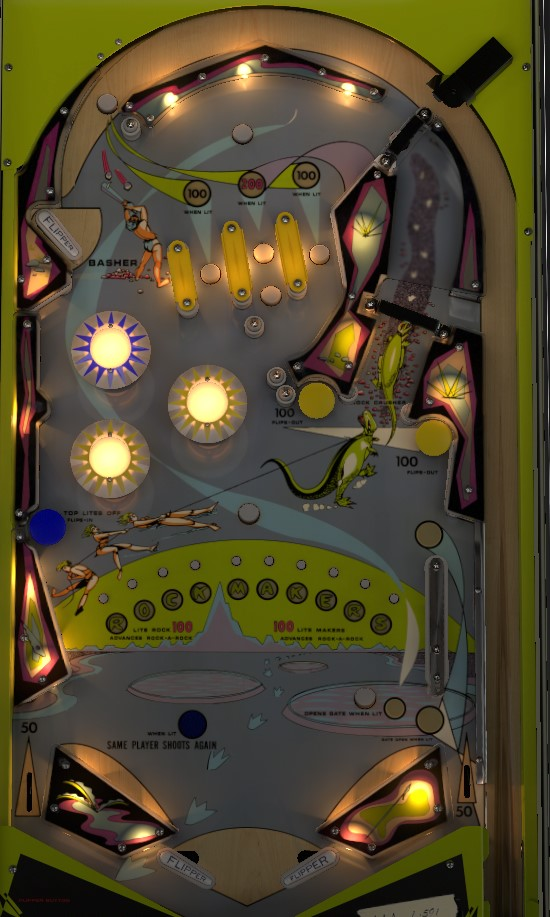

Hit the blue mushroom bumper to close the flippers, then shoot the Rock Crusher lane in the upper right to get back to the top lanes. Big points come from making top lanes when they are lit for 100 or 200 points. The RockMakers lane or any plunged ball light the 100 point lanes; the unlabeled button above the center top lane lights the center top lane; the blue mushroom bumper closes the flippers but unlights the top lanes. Spelling Rock or Makers from the center playfield rollover buttons scores 100 points and advances the Rock-a-Rock bonus reel, which awards a special or free game if you advance it enough.
The top lanes score 10-20-10 points when not lit, or 100-200-100 points when lit. Any plunged ball and any full shot to the Rock Crusher right lane will hit a rollover button that lights the left and right top lanes for 100 points. The rollover button above the center top lane lights that center top lane for 200 points. Hitting the blue mushroom bumper to close the flippers unlights all top lanes.
On the plunge, the ball comes around the top of the game before reaching a flipper in the far upper left. Well-timed use of this flipper is the only way to have a chance at making any top lanes or lighting the center top lane; without using this flipper, a plunged ball rockets around into the pop bumpers. The top yellow pop bumper always scores 10 points, and the lower blue pop bumpers always score 1.
A partial shot to the Rock Crusher right lane triggers a one-way gate, redirecting the ball back to the shooter lane for a replunge. A full shot to the Rock Crusher makes it back to the top lanes, pressing a rollover button that lights the left and right top lanes if they were not already lit.
The blue mushroom bumper on the left scores 10 points, zips the flippers closed, and unlights all top lanes. The yellow mushroom bumpers on the right score 100 points and open the flippers.
10 extra-small rollover buttons across the middle of the table each award a letter in RockMakers. Hitting a button corresponding to an unlit letter scores 10 points and lights it; hitting a bit corresponding to an already-lit letter scores 1. Spelling Rock or Makers scores 100 points and advances the Rock-a-Rock bonus reel for your player number by 1. Spelling RockMakers in full unlights all 10 letters and lets you start spelling again, which is the only way to get more than 2 Rock-a-Rock advances in one ball. Depending on operator settings, a free game or an extra ball can be earned by advancing your Rock-a-Rock bonus reel to a predetermined number listed on the score card (can be between 4 and 9 inclusive).
The unlabeled rollover button just above the RockMakers letters lights the lower right rollover button; when lit, the lower right rollover button opens the free ball gate in the right out lane. This gate stays open until used or until the end of the ball. If the flippers are closed, the entire right out lane gate process is disabled and the gate is closed; when the flippers are reopened, the gate mechanism is fully restored to how it was before the flippers were closed. Thus, it is impossible for the flippers to be closed and the right out lane gate to be open at the same time.
There are no in lanes. Two inch mini-flippers are used. Slingshots score 1 point; out lanes score 50. The right out lane has a drop lane above it that scores no points; there is no pin or other object to help bounce the ball back into play before it falls from the drop lane to the right out lane. The right out lane has a free ball gate as described above.